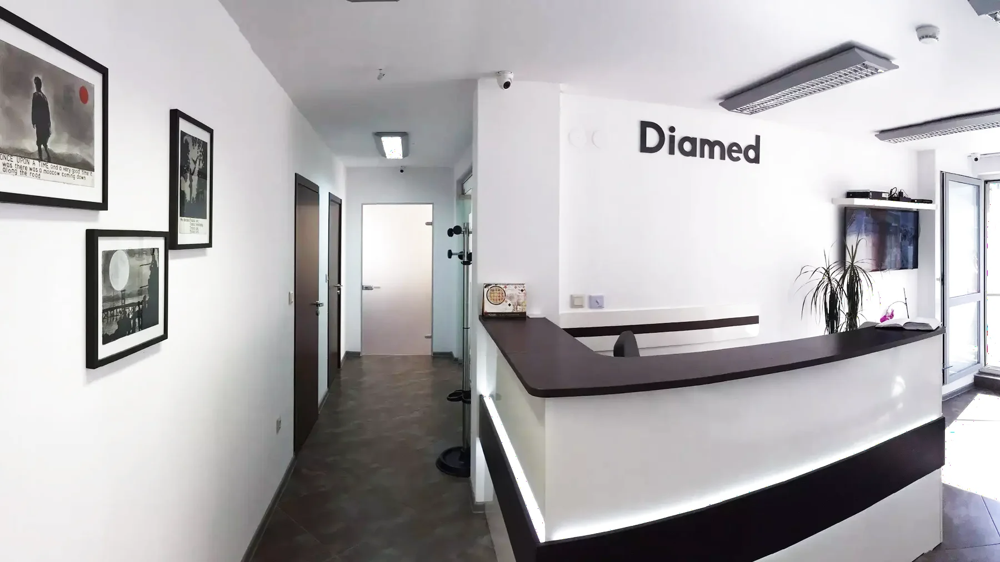
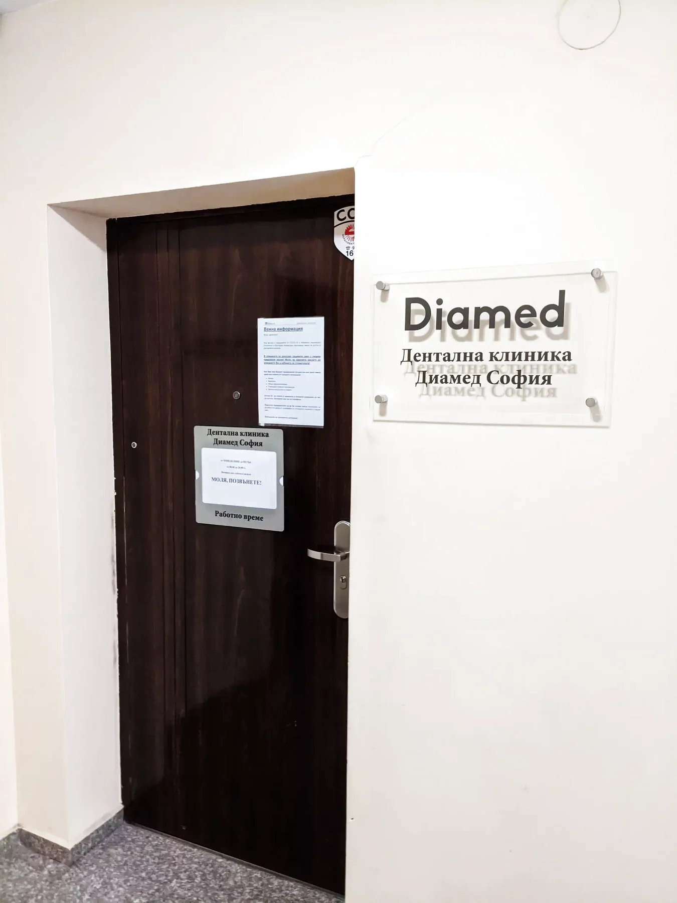

Първи преглед и консултация
Оценка на състоянието, обяснение на възможните подходи и насока за следващата стъпка.
Дентална клиника в Младост 1
„Диамед София“ е дентална клиника на ул. „Йерусалим“ 6, ет. 4, офис 12. Подходяща е за пациенти, които искат спокойно отношение, обяснен план и лесен контакт за час.

Грижа без объркване
Оценка на състоянието, обяснение на възможните подходи и насока за следващата стъпка.
Дентално лечение според конкретния случай, с обяснение на плана преди следващата процедура.
Ортопантомография, секторни снимки, 3D скенер и цефалография — уточнете по телефона според случая.
Доверие преди посещението
Преди посещение най-важното е ясно: къде се намира клиниката, как да се обадите, кога приема в делнични дни и какъв тип диагностика може да се уточни предварително.

Пациентски отзиви
„Благодарение на д-р Кондева и нейното отношение, децата ми ходят с удоволствие на зъболекар. Горещо препоръчвам!“
Gabriela Velichkova
„Доволен съм от д-р Десислава Иванова и нейния екип. Обяснява всичко на прост и разбираем език.“
Martin Bechev
Работно време
За реален свободен час и подходящ прозорец за преглед най-сигурният ход е директно обаждане.
Понеделник – Петък08:00 – 20:00
Приемс предварително записан час
Телефон089 227 9079
Следваща стъпка
Адрес и навигация
Дентална клиника „Диамед София“
офис сграда, ж.к. Младост 1, ул. „Йерусалим“ 6, ет.4, офис 12, 1784 София
Телефон: 089 227 9079